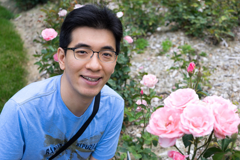

Joo-Kyung Kim

I am an applied scientist at Amazon Alexa. You can just call me JK.
My major research interest is represenatation learning for conversational AI.
I received my PhD degree advised by Eric Fosler-Lussier in the Department of Computer Science and Engineering at The Ohio State University.
During my PhD, I did three research internships on deep learning for conversational understanding at Microsoft in summer 2016, deep & recursive neural networks for constituency parsing at NEC Laboratories America in summer 2015, and deep & recurrent neural networks for named entity recognition at Nuance Sunnyvale in summer 2014.
Between 2012 and 2014, I worked on hierarchical compositions of acoustic features and different targets with deep neural networks for IARPA's Babel Program.
I received my MS degree advised by Byoung-Tak Zhang from Seoul National University and my BE degree from Sogang University.
Before joining OSU, I worked at NHN (Currently, Naver) for two years as a software engineer developing Internet search services. Also before getting my bachelor's degree, as an industrial skilled personnel, I developed mobile games at ZIO Interactive and financial risk management software at IBK System.
Email: jookyk at amazon.com
Selected Publications
Joo-Kyung Kim and Young-Bum Kim, "Pseudo Labeling and Negative Feedback Learning for Large-scale Multi-label Domain Classification," ICASSP, pp. 7964-7968, 2020. [PDF]
Joo-Kyung Kim and Young-Bum Kim, "Supervised Domain Enablement Attention for Personalized Domain Classification," EMNLP, pp. 894-899, 2018. [PDF]
Joo-Kyung Kim and Young-Bum Kim, "Joint Learning of Domain Classification and Out-of-Domain Detection with Dynamic Class Weighting for Satisficing False Acceptance Rates," Interspeech, pp. 556-560, 2018. [PDF]
Young-Bum Kim, Dongchan Kim, Joo-Kyung Kim, and Ruhi Sarikaya, "A Scalable Neural Shortlisting-Reranking Approach for Large-Scale Domain Classification in Natural Language Understanding," North American Chapter of the Association for Computational Linguistics (NAACL), pp. 16-24, 2018. [PDF]
Joo-Kyung Kim, Linguistic Knowledge Transfer for Enriching Vector Representations, PhD Dissertation, The Ohio State University, 2017. [PDF]
Joo-Kyung Kim, Young-Bum Kim, Ruhi Sarikaya, and Eric Fosler-Lussier, "Cross-Lingual Transfer Learning for POS Tagging without Cross-Lingual Resources," Empirical Methods in Natural Language Processing (EMNLP), pp. 2822-2828, 2017. [PDF] [Code]
Joo-Kyung Kim, Gokhan Tur, Asli Celikyilmaz, Bin Cao, and Ye-Yi Wang, "Intent Detection using Semantically Enriched Word Embeddings," IEEE Workshop on Spoken Language Technology (SLT), pp. 414-419, 2016. [PDF]
Joo-Kyung Kim, Marie-Catherine de Marneffe, and Eric Fosler-Lussier, "Adjusting Word Embeddings with Semantic Intensity Orders," ACL 2016 Workshop on Representation Learning for NLP (RepL4NLP), pp. 62-69, 2016. [PDF] [Word vector files]
Joo-Kyung Kim, Marie-Catherine de Marneffe, and Eric Fosler-Lussier, "Neural word embeddings with multiplicative feature interactions for tensor-based compositions," NAACL 2015 Workshop on Vector Space Modeling for NLP (VSM), pp. 143-150, 2015. [PDF]
Joo-Kyung Kim and Marie-Catherine de Marneffe, "Deriving adjectival scales from continuous space word representations," Empirical Methods in Natural Language Processing (EMNLP), pp. 1625-1630, 2013. [PDF]
Joo-Kyung Kim and Byoung-Tak Zhang, "Evolving hypernetworks for pattern classification," IEEE Congress on Evolutionary Computation (CEC), pp. 1856-1862, 2007.
Joo-Kyung Kim, Byung Soo Kim, Oh Hyuk Kwon, Seung Kon Hwang, Jung-Woo Ha, Chan-Hoon Park, Duck Jin Chung, Chong Ho Lee, Jaehyun Park, and Byoung-Tak Zhang, "A DNA computing-inspired silicon chip for pattern recognition," 13th International Meeting on DNA Computing (DNA), 2007.
Byoung-Tak Zhang and Joo-Kyung Kim, "DNA hypernetworks for information storage and retrieval," 12th International Meeting on DNA Computing (DNA), pp. 298-307, 2006.